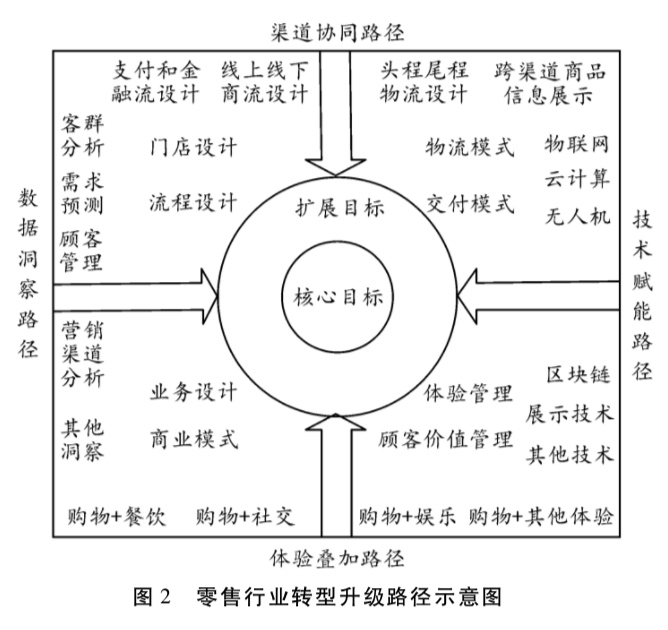
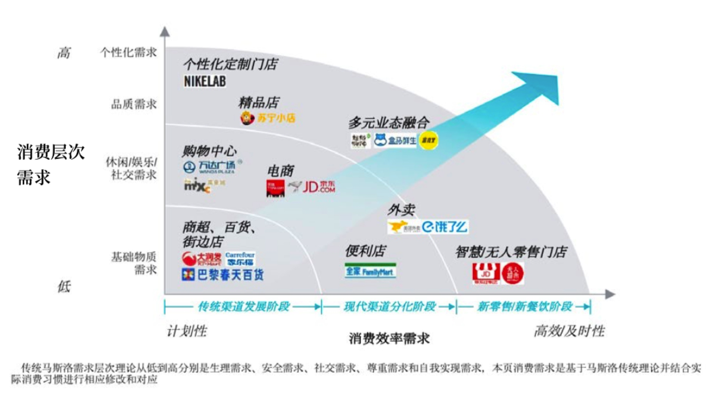

所属 Topic：数字零售与商业空间 · 类型：案例
4 新零售的模式&案例#
中国贸促会研究院发布**《零售业的无界融合理论与实践》**报告，报告指出经济社会发展水平决定了零售业态的演变。人均GDP低于1000美元时，百货店占主导地位;1000-3000美元是超市成长期;3000-6000美元是便利店成长期; 6000-8000美元是网络零售成长期;此后则分别进入仓储店、购物中心和精品专卖店成长期，也是新的变革期。“2016年和2017年，我国人均GDP连续两年超过8000美元。
由经济发展阶段，以及前面所说的新零售之轮理论，新零售时代到来了。而其展现形式也是多种多样。
1. shopping mall 商业模式#
2. 新零售的模式案例汇总#
新零售显现的主要特征
- 渠道的数字化、社交化
- 产品品质化
- 消费体验化，个性化
- 支付的移动化
(1) 消费者全生态的智慧生活体验，即实体零售 + 智慧场景的方式
(2) 社交 + 体验式购物
(3)C2M模式，个性化定制与柔性生产
先收集消费者需求，然后再进行生产。
(4)混合业态
零售转型的一般路径：
- 渠道集成
- 体验叠加
- 数据洞察
- 技术赋能

服装
优衣库
线上：掌上旗舰店，微信小程序，官方app等。
用户可以在任何时间、地点完成购买
线下：当场试穿、修改裤长等服务。
服务的多样化，个性化。考虑不同人群的需求
百丽鞋业
效率问题，为 了找到合适的鞋子，店员不得不在仓库和 货架之间来回奔波，而最后的转化率也许 只有 5%。
有了数据之后需要及时传到前端能用起来
- 优化前端
- 运动社交，店员建立主题社群
- 针对频繁拿鞋问题，在拿A的时候加上B,C
美妆供应链
蒙牛
锁定年轻人，依靠综艺节目，电影IP等
FIFA世界杯赞助商，线上微信小程序活动，借助微信做精准营销
孩子王
提供0-14岁孩子的商品采购+育儿服务
智慧门店，扫码购， 育儿顾问老师
会员制度
红星美凯龙IMP
建立智慧营销流量场，将家装过程中涉及的商家全部纳入进来，方便了消费者体验，同时降低了品牌商的成本。
共享营销模式。
人找货 => 货找人
zzz: 我们数据挖掘的价值不光要定位当前的一些情况，也需要把当前没有的，但是有用户潜在需求的方案给提供出来。
作者小结

==> zzz 汇总一些模式：
社交模式： 建立兴趣群
线上微信小程序营销活动
服务，顾问
全生命周期体验：
- 神测数据
https://www.sensorsdata.cn/blog/20180323/
-
腾讯智能零售
https://cloud.tencent.com/solution/smart_retail_solution
http://www.e-future.com.cn/news_details.php?nid=4064&lanmuid=3 -
永辉-云创
商超
https://zhuanlan.zhihu.com/p/35703280
参考资料#
- 基于 “新零售之轮” 理论的 中国 “新零售” 产生与发展研究.pdf
- 品类差异下的消费者购物价值与零售业转型升级路径——兼议“新零售”的实践形式.pdf
- http://finance.huanqiu.com/chuangr/chuangtou/2018-09/13004416.html?agt=15422
- 乔·韦曼(Joe Weinman) 美国零售业数字转型战略家、“云经济学” (Cloudonomics)概念提出者。著有《新动能 新法则》，他认为，传 统零售企业只有遵从“信息优势、方案领袖、亲密联盟、加速创新”这 些新法则，才能抓住新机遇。http://www.joeweinman.com/Bio.htm